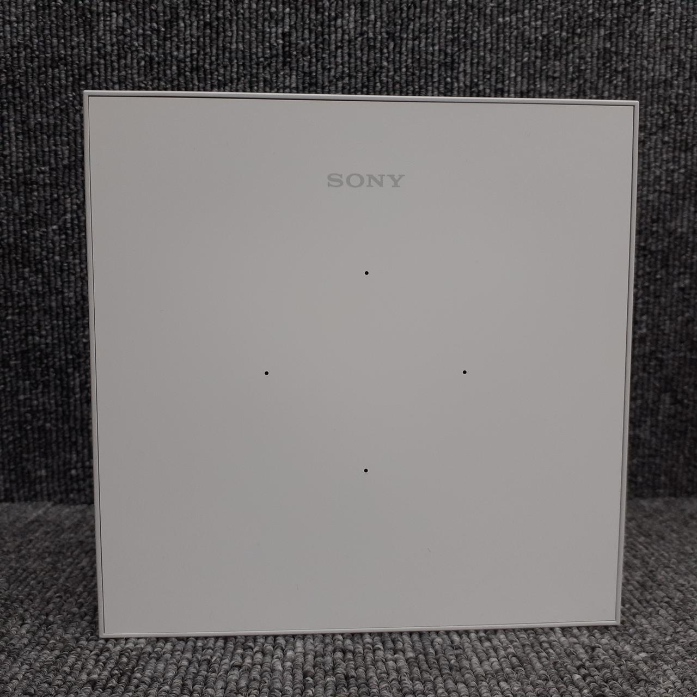
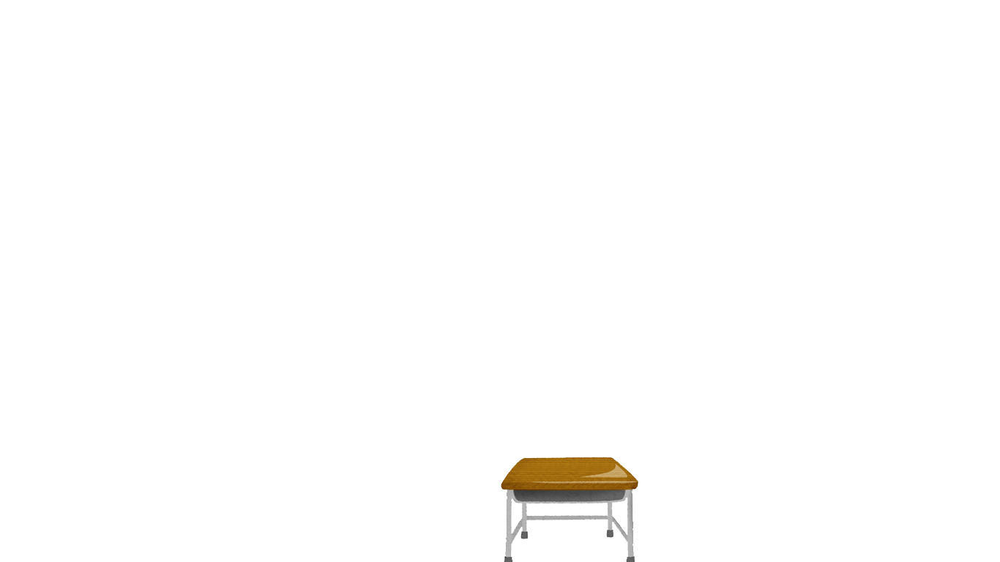
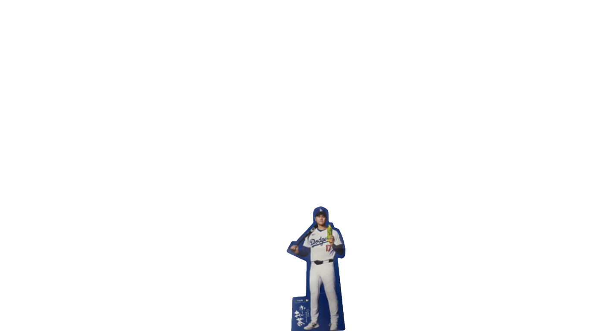
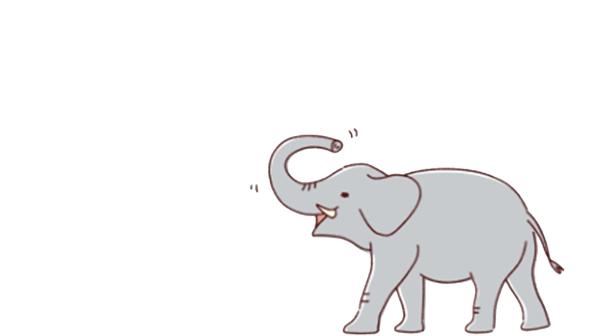
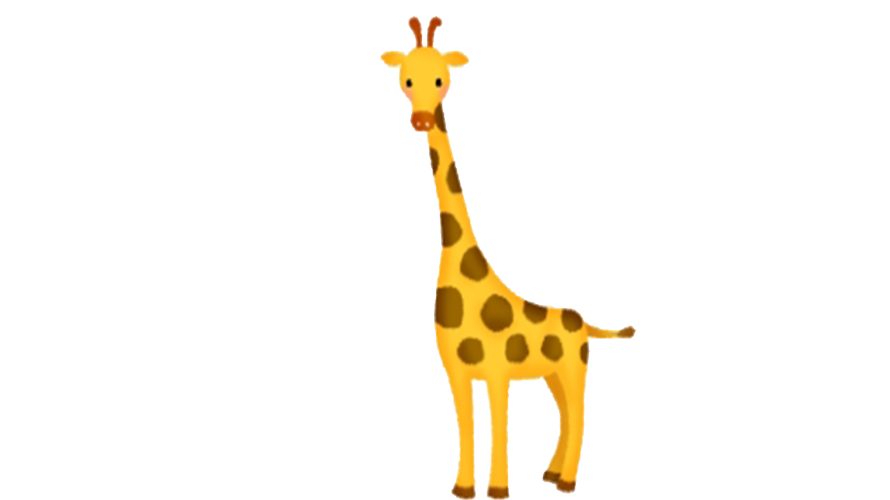

こちらをクリックして 音感 に移動します。
こちらをクリックして githubメイン に移動します。
こちらをクリックして 地球環境アニメーション に移動します。
こちらをクリックして 情報 グーグルスライドの作り方 クラスルーム使い方 に移動します。
こちらをクリックして ガパオちゃん に移動します。
こちらをクリックして ピタゴラスイッチ に移動します。
こちらをクリックして えこみゅ に移動します。
こちらをクリックして高A HR 高A HR に移動します。
こちらをクリックして 拍手であいさつ に移動します。
こちらをクリックして 課題色々 に移動します。
こちらをクリックして 数学 に移動します。
こちらをクリックして オフィスサービス カレンダーづくり に移動します。
こちらをクリックして たしざん1 に移動します。
こちらをクリックして たしざん2 に移動します。
こちらをクリックして たしざん筆算10-50までランダム に移動します。
こちらをクリックして たしざん筆算10-20までランダム に移動します。
こちらをクリックして たしざん筆算一桁と20までランダム に移動します。
こちらをクリックして たしざん筆算一桁と50までランダム に移動します。
こちらをクリックして かけざん１ に移動します。
こちらをクリックして 定規で測る13cmまで に移動します。
こちらをクリックして おかね に移動します。
こちらをクリックして おかね まるつけ に移動します。
こちらをクリックして タッチでツリーチャイム に移動します。
こちらをクリックして オフィスサービス カレンダーづくり に移動します。
こちらをクリックして マウススイッチ作り方 に移動します。
こちらをクリックして classroom作り方 に移動します。
こちらをクリックして パーソナルスペース実験 に移動します。
こちらをクリックして パーソナルスペースその２嬉しいハート に移動します。
こちらをクリックして マクロ作り方 に移動します。
こちらをクリックして 呼び出しクリック に移動します。
こちらをクリックして 時計ランダム問題 に移動します。
こちらをクリックして ドロップタップ に移動します。
こちらをクリックして ドラえもん に移動します。
こちらをクリックして ポスタ-つくり手順書 に移動します。
こちらをクリックして 朝の準備がんばろう に移動します。
こちらをクリックして しゃべるかぼちゃくん に移動します。
こちらをクリックして 防災グッズ自分にとっているものいらないもの フォームス改造版 に移動します。
こちらをクリックして 2026遠足防災メニュー に移動します。
こちらをクリックして 座間支援研修1 に移動します。
こちらをクリックして 座間支援研修2 に移動します。
こちらをクリックして 座間支援研修3 に移動します。
こちらをクリックして 座間支援研修4 に移動します。
こちらをクリックして 座間支援研修5 に移動します。
こちらをクリックして 座間支援研修6 に移動します。
こちらをクリックして 返事をしよう に移動します。
こちらをクリックして ハンドベル まとめ に移動します。
こちらをクリックして 肢体 まとめ に移動します。
こちらをクリックして 小6文化祭 に移動します。
こちらをクリックして 小45歓声 に移動します。
こちらをクリックして akb再生用 に移動します。
こちらをクリックして 公開授業研 かみすき手順書 に移動します。
こちらをクリックして 音声読み上げボックス8 に移動します。
こちらをクリックして 音声読み上げボックス8 に移動します。
こちらをクリックして 音声読み上げボックス8 選べる に移動します。
こちらをクリックして 高校生用 カロリー計算アプリ に移動します。
こちらをクリックして きょく に移動します。
こちらをクリックして shotcut入門 に移動します.
こちらをクリックして piezo に移動します.
こちらをクリックして 連絡帳 改善策 に移動します.
こちらをクリックして トマス問題 に移動します.
こちらをクリックして 自動採点プリント に移動します.
こちらをクリックして 2025訪問用アプリメインサイト に移動します.
こちらをクリックして 先生と三語文 に移動します.
こちらをクリックして デジタルリハビリ自作アプリ その１ に移動します.
こちらをクリックして デジタルリハビリ自作アプリ 消える版 に移動します.
こちらをクリックして デジタルリハビリはなび に移動します.
こちらをクリックして デジタルリハビリはなびver2 に移動します.
こちらをクリックして 誕生日セット に移動します.
こちらをクリックして 誕生日セット9月 に移動します.
こちらをクリックして スイッチでピアノ に移動します.
こちらをクリックして 会議や記録用 音声入力アプリ 未完成 に移動します.
こちらをクリックして さかなとりゲーム に移動します.
こちらをクリックして さかなとりゲームver2 に移動します.
こちらをクリックして さかなとりゲームver5 ゲーム風 に移動します.
こちらをクリックして くだもの2択クイズ に移動します.
こちらをクリックして どうぶつ2択クイズ に移動します.
こちらをクリックして がくしゅう2択クイズ に移動します.
こちらをクリックして ひらがな2択クイズ に移動します.
こちらをクリックして 選挙をしよう！ に移動します.
こちらをクリックして 得点ゲーム！ に移動します.
こちらをクリックして 名前変更式 得点ゲーム！https://docs.google.com/spreadsheets/d/1CULP4Y3jCiTCm5rYvo05iZIjSKCYTlXc61nU9VzUjRA/edit?gid=0#gid=0 に移動します.
こちらをクリックして 38個解体ゲーム に移動します。
こちらをクリックして ハンドベル汎用型 に移動します。
こちらをクリックして 絵本 ほしをつるよる に移動します。
こちらをクリックして 変身トンネル に移動します。
こちらをクリックして おおきくなるということは に移動します。
こちらをクリックして みんなともだち に移動します。
こちらをクリックして 10以上をかぞえて書いてみよう に移動します。
こちらをクリックして くるまゲーム に移動します。
こちらをクリックして コンビニ に移動します。
こちらをクリックして 2025年07月 研修用 に移動します。
交流デイこちらをクリックして ss4.5受付 に移動します。
こちらをクリックして ss4.5３種音声 に移動します。
こちらをクリックして 大きな声で話してみよう メーター付き に移動します。
こちらをクリックして 美術 春の壁面画 に移動します。
こちらをクリックして 音の出るおもちゃ 2016 に移動します。
こちらをクリックして 質問します！ に移動します。
こちらをクリックして 欽ちゃん仕分けカウンター に移動します。
こちらをクリックして 生徒会クイズとダンス に移動します。
こちらをクリックして ラーメンシミュレーター に移動します。
こちらをクリックして ラーメンシミュレーター2 に移動します。
こちらをクリックして たなばた音楽 に移動します。総合クイズ
https://iidadaikigithub.github.io/sougouquiz20240521/iriguti.html
https://iidadaikigithub.github.io/sougouquiz20240521/kiga.html
https://iidadaikigithub.github.io/sougouquiz20240521/mizu.html
https://iidadaikigithub.github.io/sougouquiz20240521/gomi.html
https://iidadaikigithub.github.io/sougouquiz20240521/heiwa.html
ホームルームアプリ
https://iidadaikigithub.github.io/20240527homeroomapri/asa/asa.html
https://iidadaikigithub.github.io/20240527homeroomapri/kaeri/kaeri.html
https://iidadaikigithub.github.io/20240527homeroomapri/kaigi/kaigi.html
https://iidadaikigithub.github.io/20240527homeroomapri/syukudai/syukudai.html
https://iidadaikigithub.github.io/20240527homeroomapri/toujitu/toujitu.html
こちらをクリックして codespace に移動します.
https://iidadaikigithub.github.io/20250716matujun/s2.html音楽たたき
こちらをクリックして 音楽たたき 設定画面 に移動します。
こちらをクリックして 音楽たたき 演奏モード に移動します。
やすでんわ yes no 4秒でUI消える タッチとエンターで復帰版 https://storage.gooｃgleapis.com/ipadman/yubidenwayesno/s3ab.html カスタマイズ可能なボカアプリ アプリ表示場所 https://storage.googleapis.com/ipadman/yubidenwayesno/s10.html 文字を書く場所 https://docs.google.com/spreadsheets/d/1SivbwxAKcmSyoyjqL8G9_sR_kg14sU-BxzzFiFnkywU/edit?gid=0#gid=0 画像所 https://console.cloud.google.com/storage/browser/ipadman/yubidenwayesno/gazou;tab=objects?pageState=(%22StorageObjectListTable%22:(%22f%22:%22%255B%255D%22))&hl=ja&project=project-cccb1cea-53c6-47b7-805&prefix=&forceOnObjectsSortingFiltering=false




